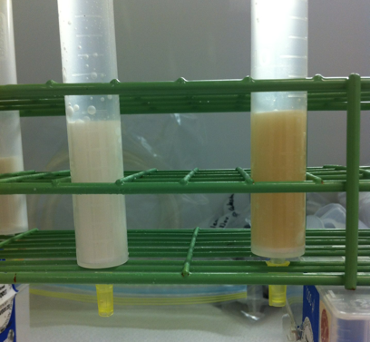

On Culturing Iron Limited Phytoplankton
9/5/13
In order to grow T. oceanica at different iron concentrations, I need to strip all metals from the media they’ll be growing in before I can add my own. This is where a chelating compound, in the form of Chelex 100 Resin, comes in handy. Chelex is a highly purified chelating compound composed of styrene divinylbenzene copolymers which have iminodiacetate ions strewn within which act as the chelating molecules that bind metal ions and thus remove them from whatever media you pass through them. Technical description aside, it’s mostly a bunch of organic molecules with chelating molecules amongst them.
The Chelex, however, must sit through a week-long cleaning process before it can actually be used. Sparing the details, it basically sits in methanol for a few hours then in 1 molar HCL overnight and then into 3 molar NH3OH for an entire week. The NH3OH is some pretty pungent stuff too. Getting a whiff of that will certainly clear out your sinuses. After that’s all done you need to suspend the Chelex in whatever media you plan to use it for and titrate it to pH 8.1—the pH of seawater. This is also a long process, as the Chelex is very good at buffering the media, which means it takes a good deal of NaOH to stabilize it to the correct pH.
The first time I made a Chelex column, the media I used was water from Stony Brook Harbor. I thought the column would remove the iron from this water and I’d be good to go to use it to grow my iron-cultures. I was definitely right, but so wrong at the same time. Only after a few passes through the column did I notice a dark brown spot forming in the top layer of the Chelex. I began to worry that the column was becoming saturated too quickly and would be useless. Not to mention my iron limited culture at the time did not seem very iron limited.
Thinking I could recharge the Chelex, I soaked it in 1 molar HCL again overnight to, in theory, remove all the metal that was bound in there. I thought I’d see the Chelex change to a lighter shade after this, and I’m pretty sure I deluded myself into thinking I saw a change just to believe it worked. Eventually I tried this process again and instead used water from farther out at sea because the harbor water most likely contained far too much metal insomuch that the effluent still had significant amounts of iron in it (which would explain why the first cultures didn’t seem iron limited).
Using this open ocean water helped a little bit, as I did notice a slight difference in growth rate between the high and low iron cultures, but it still wasn’t as pronounced as it should have been. Desperate, I decided to try growing them in the artificial medium Aquil, which is DI water with different hydrous and anhydrous salts dissolved in it. Now I noticed a larger difference in growth rates, but it STILL wasn’t as different as it should be. I was still using that first Chelex column that I still pretended was clean enough to use. It was suggested that I make a new column and I thought this was a very good idea, and now using the comparison picture it is clear that the new one is much cleaner than the old one.
I recently made new cultures using the media passed through the new column and hopefully the differences between the cultures is even more pronounced this time.


These are the Chelex columns I had made, with the new one on the left and the older one on the right. The older one is clearly darker and thus loaded with metals and/or any leftover organic matter from the ocean water passed through it.
Below is an image of the entire
column(s). The top cap is removed and media is poured in to fill the entire column. A hose it attached to the spout at the end (which can be seen with its yellow cap in the picture on the left) and the media passes through the hose and into the acid washed receptacle at the end.